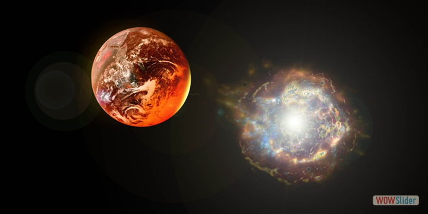
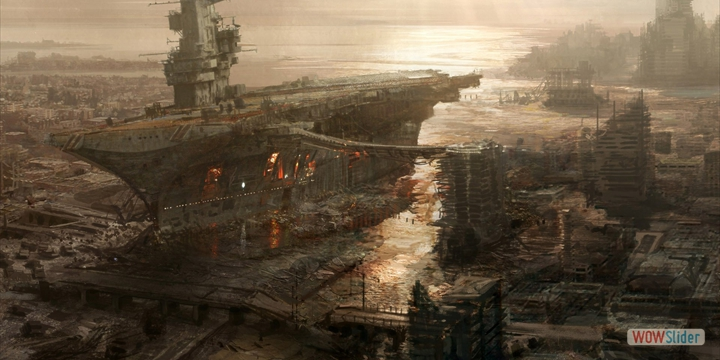
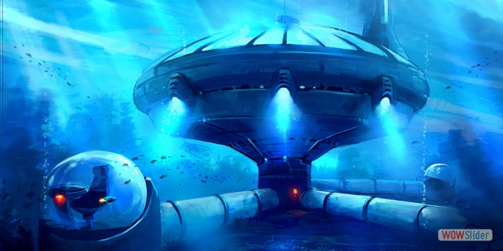
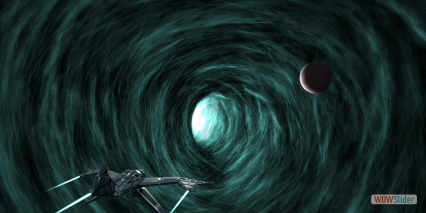

In the year, 2438 history took a turn, a gigantic solar flare sped across the void to scorch the earth. In an instant the already fragile earth was devastated.
 This is 200 P.SE (Post- Scorch Earth). Not even science can do everything. The surface is toxic.
Humans live below the sea in pressurized bunkers using the earth’s core as a source of energy.
XDSE (Xtreme Deep Space Exploration) is a space programme run by the Gaia corps. This is their 75th mission to the outer reaches of the galaxy searching for a habitable planet.
You, a cosmonaut are aboard the Millenium Falcon travelling through the galaxy.
Many perils await you on your journey 'Into Darkness'. Dont fail the earth it depends on your skill ...